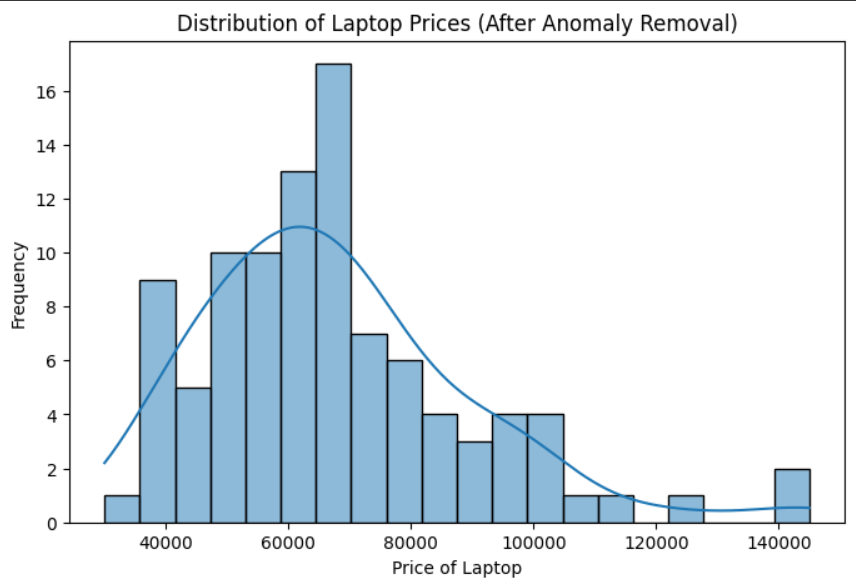
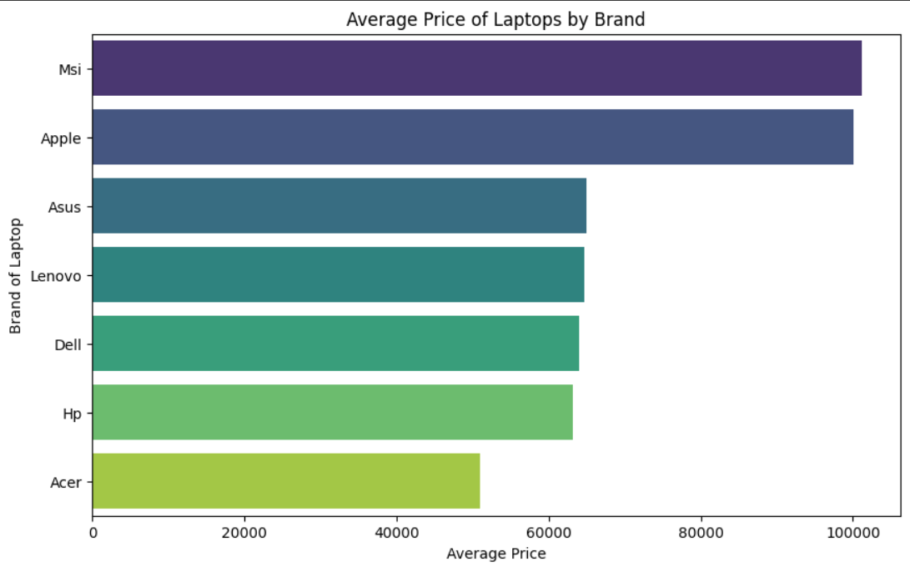
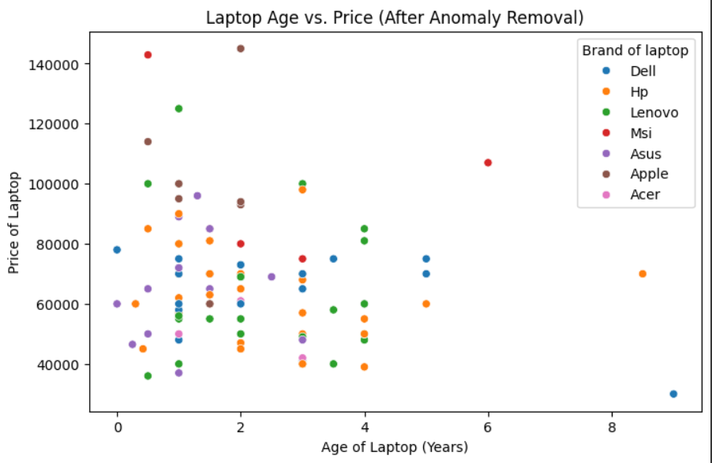
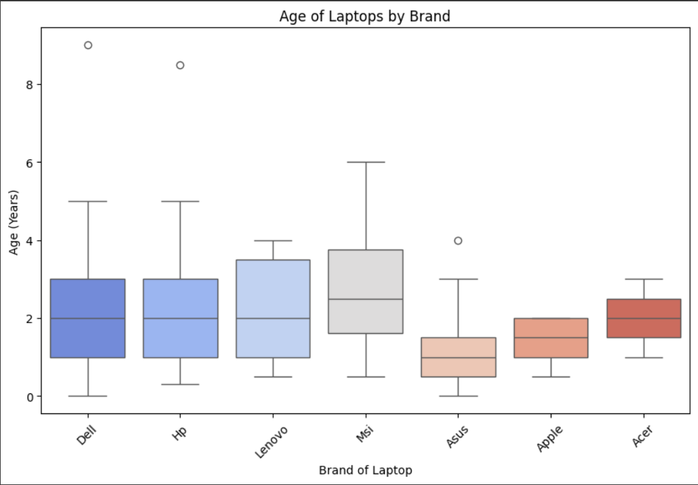
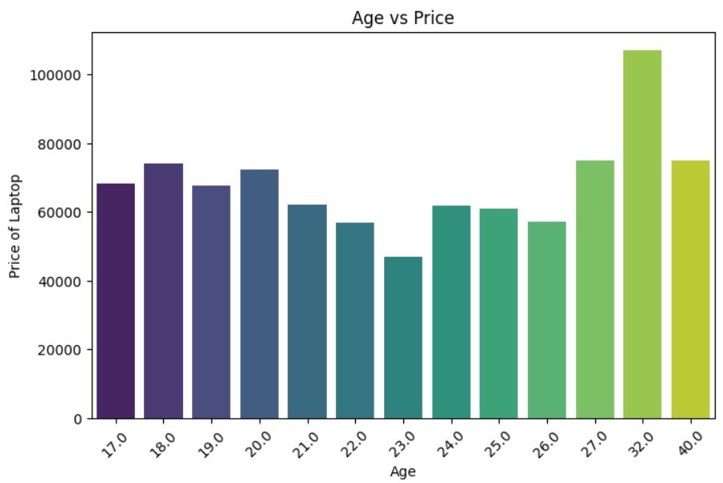
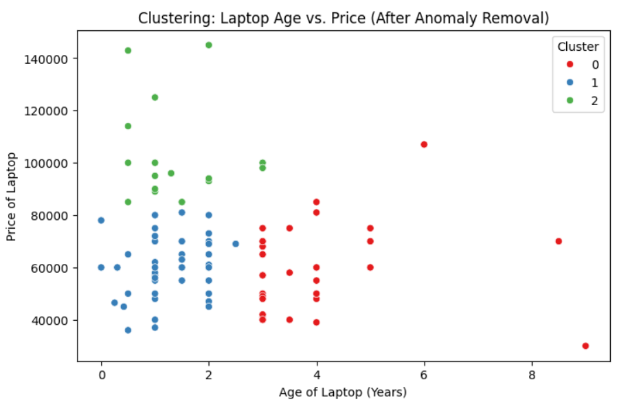

.png)
Storytelling
Everyone remembers the day they first got into college. The rush of emotions—the excitement, the nervousness, the overwhelming realization that everything is about to change. New classes, new friends, and a brand-new chapter of life await. But before any of that, there is one crucial task: getting ready for college life.
Preparation for college life means gearing up with all the essentials, and a laptop is at the top of the list. But what to buy? With countless options, each boasting cutting-edge features and wildly different price tags, the decision can feel overwhelming. For such situations, the best way to make a choice is by analysing experiences.
So let's have a look at some possible choices from the survey responses:

Survey shows that most people balance price and performance, aiming for laptops that are neither too outdated nor absurdly expensive. The price distribution of laptops (histogram of price vs frequency) shows that the most preferred laptop price is around 70000. For this price, one can get either high-end business laptops or low-to-mid-end gaming laptops.
After looking at the price distribution, one might think about the brands of laptops and th laptops offered by them. Let's jump into the brand aspect of it:
Some brands offer only high-end or premium laptops, some offer only budget laptops and others offer a mix of both. From the average price per brand chart(bar graph of data, grouped by brand), we can see that companies like MSI and Apple manufacture high-end premium laptops, while Acer manufactures laptops having a lower price. Other companies like HP, Dell, Asus and Lenovo have a wider range of products with an equally wide price range
Another important aspect before making such a big purchase is the longevity of the device. Students may prefer the laptops which have a higher lifespan, ones which would work fine for their entire program at the institute. For this, the age of the laptop wa plotted against the price. This at first glance might seem a good way to figure out the lifespan and it actually is, but for this case, since many responses were from B.Tech students and M.Tech/M.Sc students, the age of laptop was less or equal to 4
If we think about it, it is quite logical that the age would be concentrated in that region. For B.Tech students, many prefer to buy a new laptop at the start of their college life, something for which we are working in this study, which is often their first laptop. This has caused the age of laptop to be concentrated around 0-4 years, which is equal to the duration of the program. Therefore, for analysing the durability, some other parameter should have been collected and observed.
But with this box plot, we can observe the durability with respect to brands and select the laptop which covers the duration of the program the student is enrolled in. HP, Dell and MSI can be een having the most durable laptops among those with students
Looking at the average price of laptop for an age group, we can see that the young generation, our generation, prefers buying pricey laptops, which may not entirely be because of the spending habits. With the advancement in technology, new CPUs and GPUs are launched every few years. If one buys a fairly new product today, it is guarunteed to last at least 4-5 years. We can also see a huge peak at the other extreme. This is because these students are enrolledin PG programs and require more powerful laptops for their studies. Also, they are getting fellowships and/or have had jobs before joining, due to which they may have bought better machines.
Another interesting point here is the dip at 23 year olds. These kind of dips will be quite rare and generally due to some global/historic event, in this case, the pandemic. The prices fluctuated during that period because production was low, but people still neede more devices for WFH and online classes. This may have caused a drift from the ususal pattern.
Lastly, an average student's laptop can be broadly classified into one of these three categories:
Every person is unique, and that is reflected in their choices, even in their laptops! So for students looking for a laptop but are overwhelmed by the options and tired of researching, this analysis may help them decide their trusty machine!!